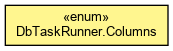

org.waarp.openr66.database.data
Enum DbTaskRunner.Columns
java.lang.Object
 java.lang.Enum<DbTaskRunner.Columns>
org.waarp.openr66.database.data.DbTaskRunner.Columns
java.lang.Enum<DbTaskRunner.Columns>
org.waarp.openr66.database.data.DbTaskRunner.Columns
- All Implemented Interfaces:
- Serializable, Comparable<DbTaskRunner.Columns>
- Enclosing class:
- DbTaskRunner
public static enum DbTaskRunner.Columns
- extends Enum<DbTaskRunner.Columns>

GLOBALSTEP
public static final DbTaskRunner.Columns GLOBALSTEP
GLOBALLASTSTEP
public static final DbTaskRunner.Columns GLOBALLASTSTEP
STEP
public static final DbTaskRunner.Columns STEP
RANK
public static final DbTaskRunner.Columns RANK
STEPSTATUS
public static final DbTaskRunner.Columns STEPSTATUS
RETRIEVEMODE
public static final DbTaskRunner.Columns RETRIEVEMODE
FILENAME
public static final DbTaskRunner.Columns FILENAME
ISMOVED
public static final DbTaskRunner.Columns ISMOVED
IDRULE
public static final DbTaskRunner.Columns IDRULE
BLOCKSZ
public static final DbTaskRunner.Columns BLOCKSZ
ORIGINALNAME
public static final DbTaskRunner.Columns ORIGINALNAME
FILEINFO
public static final DbTaskRunner.Columns FILEINFO
MODETRANS
public static final DbTaskRunner.Columns MODETRANS
STARTTRANS
public static final DbTaskRunner.Columns STARTTRANS
STOPTRANS
public static final DbTaskRunner.Columns STOPTRANS
INFOSTATUS
public static final DbTaskRunner.Columns INFOSTATUS
UPDATEDINFO
public static final DbTaskRunner.Columns UPDATEDINFO
OWNERREQ
public static final DbTaskRunner.Columns OWNERREQ
REQUESTER
public static final DbTaskRunner.Columns REQUESTER
REQUESTED
public static final DbTaskRunner.Columns REQUESTED
SPECIALID
public static final DbTaskRunner.Columns SPECIALID
values
public static DbTaskRunner.Columns[] values()
- Returns an array containing the constants of this enum type, in
the order they are declared. This method may be used to iterate
over the constants as follows:
for (DbTaskRunner.Columns c : DbTaskRunner.Columns.values())
System.out.println(c);
- Returns:
- an array containing the constants of this enum type, in
the order they are declared
valueOf
public static DbTaskRunner.Columns valueOf(String name)
- Returns the enum constant of this type with the specified name.
The string must match exactly an identifier used to declare an
enum constant in this type. (Extraneous whitespace characters are
not permitted.)
- Parameters:
name - the name of the enum constant to be returned.
- Returns:
- the enum constant with the specified name
- Throws:
IllegalArgumentException - if this enum type has no constant
with the specified name
NullPointerException - if the argument is null
Copyright © 2009-2013 Waarp. All Rights Reserved.